| |
JAPAN 2018!!! =)
Osaka Universal Studios Japan Parque Espana Nagashima Spaland
Hiroshima & Kyoto Tobu Zoo Fuji-Q Highlands
Tokyo Joypolis Tokyo Dome City Yomiuriland Sea Paradise Hamanako Pal Pal Tokyo Disney Resort Yokohama Cosmoworld
Toshimaen
All right. Time for another Tokyo adventure. Just strolling around, enjoying this lovely Japanese day.
Hey you! Wanna see what we dragged out of the ocean this morning!?
Hmm. I wonder where we're heading today?
Ugh. We really could've used this covered pathway back when we were here on Tuesday. Oh crap. I think I just gave it away.
Yep. We're back at the Senso-ji Temple this morning.
It's a beautiful sunny day today. That means it's time to go back to Hanayashiki and get that credit!
 God damn it! Nearly all the rides are down today for maintenence! Ugh. Well, at least I have another week in Japan. I'll just come back later when all this maintenence is done.
God damn it! Nearly all the rides are down today for maintenence! Ugh. Well, at least I have another week in Japan. I'll just come back later when all this maintenence is done.
Well, we might as well just explore the temple in much greater detail. Yeah, we explored it a little on Tuesday in the rain, but we were primarily just trying to stay dry. It'll be good to look at it in further detail.
The river is a really nice touch to this temple.
Hmm. I definetly like the dragon architecture they have here.
 OK. So what this really is is another monument to Buddah (Well duh! We're in a buddhist temple you dumbass!). If you really want more details, you can read them here,
OK. So what this really is is another monument to Buddah (Well duh! We're in a buddhist temple you dumbass!). If you really want more details, you can read them here,
There's nothing special or fancy about this bridge. I just really like it.
Hmm. There's a nice historic temple right here. What could make this better? Oh I know! Let's have an S&S Space Shot in the background!
Fun fact. This is actually the oldest temple in Tokyo.
It may not be as good as the really famous temples in Kyoto, it's still a really nice temple.
Oh crap. I keep forgetting that this is actually a religous place (I already covered this in the Tokyo Joypolis update). Sh*t! People are praying in here! I should probably get out of here!
ROAR!!! BLASPHEMOUS IRRELIGOUS HERATIC!!! CONVERT TO BUUDHISM OR ELSE I'M GONNA F*CKING EAT YOU!!!
Hey park map enthusiasts! You have the Senso-ji map in your collection? I didn't think so. =P
Hmm. Where to have lunch today? So many good local places to choose from.
I want Gyoza today, but they're not open yet! NO!!! ='(
Hmm. I'm all the way out in Japan. So many good food options to choose from. I know! Let's eat the cuisine from another country today!
So yeah. We're having Indian food today. Which....is good. I really like Indian food. And I rarely have it back home. So it fits.
Hmm. What do we have over here?
So yeah. I came across a drum museum. I've got some time. Screw it. I'm gonna check this place out.
It's a shame there's no photography allowed in the actual museum because this place is really cool. Who knew learning about different drums from around the world would be so interesting.
Ooh! This train stop is decorating all its Christmas Lights. Pretty!
Yep. We're only at the Yomiuriland train stop, and already, Land Dog (the park mascot) is welcoming us to the park.
Welcome to Yomiuriland!
Here's a park map just in case you get lost.
I spy with my little eyes, a Christmas tree that's out of season.
OK. So Land Dog is this weird....dog. He doesn't look like any park mascot (or cartoon dog) I've ever seen. But I really like him. And apparently, you can learn all about Land Dog here.
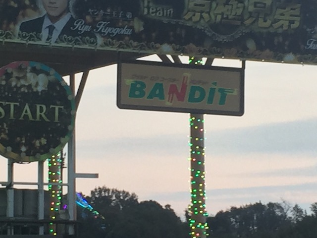
All right. First things first, time to ride Bandit.
Holy Crap! This ride actually has a line (Fun fact. This is the only line in the park)!
Hmm. They've really decked out all the Christmas lights here.
No ducks are allowed on Bandit.
 *gasp* We're riding Bandit!? NO!!! I don't want to ride one of the worst coasters ever!
*gasp* We're riding Bandit!? NO!!! I don't want to ride one of the worst coasters ever!
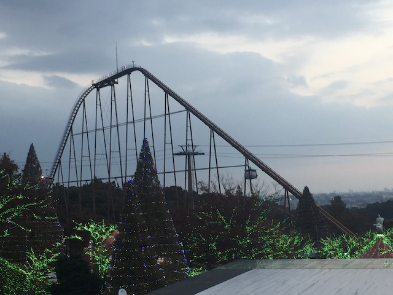
LOL. Yomiriland Bandit may not be the best ride ever by any means, but compared to that peice of sh*t at Movie Park Germany, this ride is freaking Steel Vengeance by comparison.
 So Bandit is a sort of....Togo Mini Hyper. It's not quite a hyper coaster. But then again, if things like Mega-Lites, or even Steel Eel count, then I guess Bandit should count since it's about the same size (Bandit isn't a hyper coaster, regardless of the loopholes I mentioned).
So Bandit is a sort of....Togo Mini Hyper. It's not quite a hyper coaster. But then again, if things like Mega-Lites, or even Steel Eel count, then I guess Bandit should count since it's about the same size (Bandit isn't a hyper coaster, regardless of the loopholes I mentioned).
 Bandit may not be anything special, but it does have a lot of speed, a couple pops of airtime, some cool helixes, and is another smooth as glass Togo. So yeah. It may not stand out, but it's still a fun roller coaster.
Bandit may not be anything special, but it does have a lot of speed, a couple pops of airtime, some cool helixes, and is another smooth as glass Togo. So yeah. It may not stand out, but it's still a fun roller coaster.
OK. So the reason you see all these Christmas Lights everywhere is because Yomiuriland is holding their own Illumination, despite it not only being November, but EARLY November.
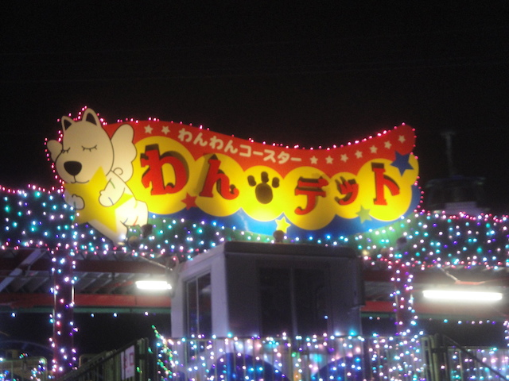
Let's just knock this out of the way.
 As a kiddy coaster, it's whatever. Standard run of the mill.
As a kiddy coaster, it's whatever. Standard run of the mill.
 But Holy Crap!!! All those lights!
But Holy Crap!!! All those lights!
 When Yomiuriland goes all out on Christmas, even the kiddy coaster gets the holiday treatment.
When Yomiuriland goes all out on Christmas, even the kiddy coaster gets the holiday treatment.
 Bling. Bling. Cha-Ching. Cha-Ching.
Bling. Bling. Cha-Ching. Cha-Ching.
Hmm. What is the Momonga Standing & Loop?
 Yep. It's the coaster with both a stand up train as well as a sit-down train. And of course, we're choosing to stand up.
Yep. It's the coaster with both a stand up train as well as a sit-down train. And of course, we're choosing to stand up.
Standing (or sitting) with the Christmas Lights.
OH GOD!!! NO!!! NOT THIS RIDE!!!
Yep. This evil ride has managed to find its way in Japan. Not happy about that.
Fun fact. So pretty much all sorts of places in the Tokyo area compete in something called Winter Illumination, where they try and outdo each other in terms of Christmas Lights.
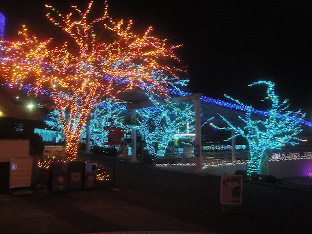
You know how all the whos decorate their houses in that really cartoonish extravegant way in How the Grinch Stole Christmas? This is the real life version of that.
So pretty *drool*.
 Hmm. The S&S Tower would not only let me see all the pretty lights, but get a thrill too. Win win situation.
Hmm. The S&S Tower would not only let me see all the pretty lights, but get a thrill too. Win win situation.
Hmm. I wonder if the S&S Tower is open today?
Apparently, this Disk-O is the new 2018 ride for Yomiuriland. Hey, it's a fun addition and I'm happy I stopped to ride it.
 I had no idea what this was at the time. Apparently, this is one of those spinning raft rides. Fun, but in this weather, nope.
I had no idea what this was at the time. Apparently, this is one of those spinning raft rides. Fun, but in this weather, nope.
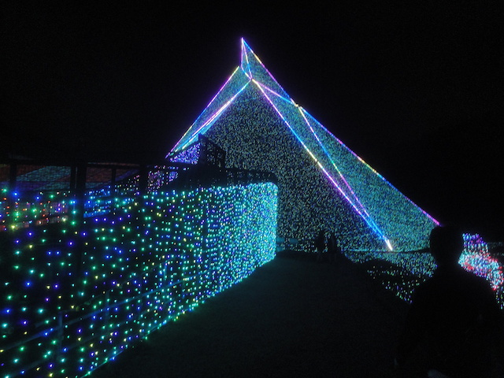
Hey Yomiuriland! It's November! Take down your Christmas....HOLY SH*T!!! THOSE LIGHTS ARE SO PRETTY!!!
So this is a Christmas sledding hill, where you can slide down the hill on a tube amongst all the lights. So cool!
Hey kids! Scram! This is our slide now!
Holy Sh*t! All the lights are so pretty!
No Mr. Seal! Eat the fishy! Don't eat poor Land Dog!
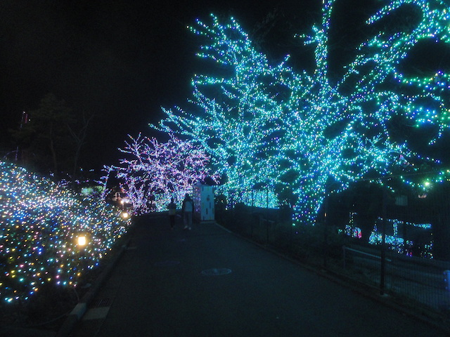
When Yomiuriland decided to decorate for Christmas, they went FULL BALLS OUT nuts.
Maybe if we cover the stairs with Christmas Lights, we can trick people into taking the stairs. Oh wait. We don't need to do that. We're in Japan. Not America.
Much like at Tobu Zoo, Yomiuriland also has the Christmas Lights grass here too.
Holy Crap! I loved the Winter Illumination they had at Tobu Zoo, but....DAMN!!! Yomiuriland just knocked it out of the park!
I don't think I'm ever gonna speak highly of Holiday in the Park again. Sorry Six Flags. I know you're trying, but after this, you just can't compete.
They just decorated so much! It's kind of incredible!
This nature is not pretty enough! Throw on some pretty shiny lights!
 OK. We're idiots. Where the hell is Spin Runway!? I've been walking all around this park, but could never find it!
OK. We're idiots. Where the hell is Spin Runway!? I've been walking all around this park, but could never find it!
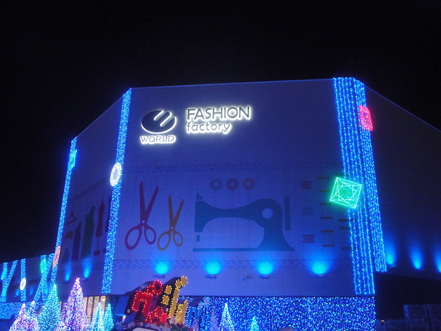
*facepalm* Right in the front of the park! God damn it! It's just like at Parue Espana all over again!
 Holy Crap! This ride is good! Really good! It spins like crazy and it's better than freaking Bandit (which really surprised me). Hell, I'd call it my 4th favorite spinner (#1. Winjas #2. Tornado @ Bakken #3. Gekion: Live Coaster).
Holy Crap! This ride is good! Really good! It spins like crazy and it's better than freaking Bandit (which really surprised me). Hell, I'd call it my 4th favorite spinner (#1. Winjas #2. Tornado @ Bakken #3. Gekion: Live Coaster).
The ride is themed to being inside a fashion factory. However, the fashion factory is far more like a disco and a night club. It's like if Land Dog collaberated with Lady Gaga to make a spinning coaster.
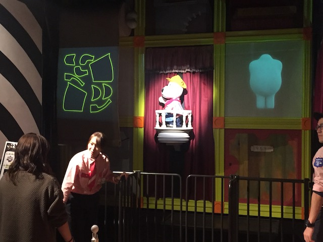
Let's have some fun. This beat is sick. I wanna take a ride on your disco stick.
I see all these amazing Christmas Lights at Yomiuriland and this is the best you can do for a Santa!? For shame.
I'm so entranced by all the pretty lights here.
 So I decided that for dinner, I thought that a Doner Kebab and a beer would be the best thing to have. Hey Cliff. You like my dinner? =)
So I decided that for dinner, I thought that a Doner Kebab and a beer would be the best thing to have. Hey Cliff. You like my dinner? =)
 OK. We need more rides on Bandit.
OK. We need more rides on Bandit.
 What's that? You liked the spinning coaster more than me!? Well how about I spice up the ride with some FIRE!!!!
What's that? You liked the spinning coaster more than me!? Well how about I spice up the ride with some FIRE!!!!
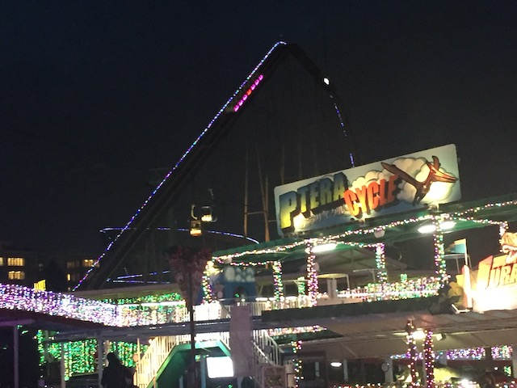
Bandit is fun and all, but I just love the way that the park even decorated it for the Yomiuriland Illuminations.
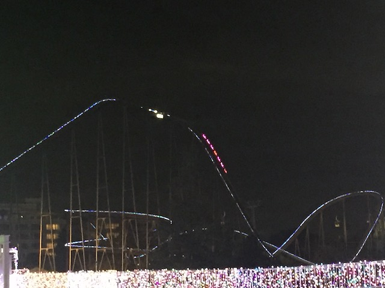
Ho ho ho! Christmas Bandit rolls on by!
There aren't enough lights here! Add more!
 Oh look. They have go-karts here.
Oh look. They have go-karts here.
Meh. Wound up not doing it, but driving amongst all the lights would be really cool.
You think all the christmas lights on the Go-Kart track is causing distracted driving?
So this is a sort of laser shooting game. However, the attendents were hesitant to have me play since they figured that I wouldn't understand the game at all. But I insisted. And sure enough, the bare minimum amount of Japanese I know is not enough and I wound up not understanding the game at all, scoring almost no points, and making a total ass of myself.
 I know it's not a new credit. But I think it's only fair that we give the sit down a side a fair chance on the Standing & Loop.
I know it's not a new credit. But I think it's only fair that we give the sit down a side a fair chance on the Standing & Loop.
 OK. Putting aside the uniqueness of standing or sitting, this is a very dull ride.
OK. Putting aside the uniqueness of standing or sitting, this is a very dull ride.
 I feel like this the sort of coaster that you'd build in an RCT Tutorial on "How to build a stand up coaster", where you make a coaster with the bare essentials of a coaster, first drop, loop, helix, the end. Only they decided to also add a sit down train for those who don't like standing up. It's certainly unique, but it's very much a novelty credit.
I feel like this the sort of coaster that you'd build in an RCT Tutorial on "How to build a stand up coaster", where you make a coaster with the bare essentials of a coaster, first drop, loop, helix, the end. Only they decided to also add a sit down train for those who don't like standing up. It's certainly unique, but it's very much a novelty credit.
Now presenting, the tunnel of Christmas Lights.
Oh f*ck. I shouldn't have eaten those mushrooms.
Love all the blue they use to decorate that tree.
Decorating all the trees with lights isn't enough! We need to also construct a whole seperate tree entirely from lights!
Land Dog wishes you a very Merry Christmas. And a happy new year too.
OK. I love Land Dog. He's probably one of my favorite custom park mascots. I kind of wish I got some Land Dog merchandise. Oh well. It's not like I need more crap. And besides, I can just come back and get it next time.
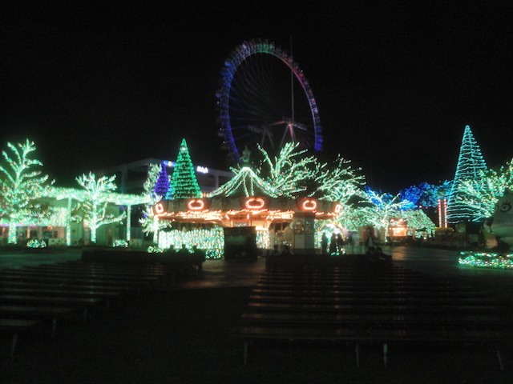
Unfortunetly, my phone is about to die, and my back-up camera is already dead. So no Christmas photos from the Ferris Wheel today. =(
Well Yomiuriland, it was really fun visiting you. You're a very odd and quirky park, but I still really liked stopping by.
I'll gladly swing by again on my next Japan trip.
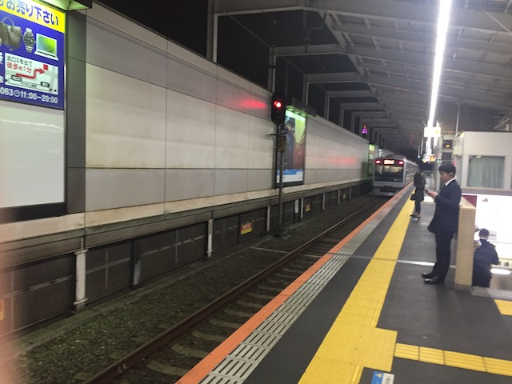
All right. Time to head on back to Akihabara.
Sea Paradise
Home
|